МАСЛЯНЫЙ НАСОС (для моделей с DPF) > УСТАНОВКА |
| 1. УСТАНОВИТЕ КАРТЕР ГАЗОРАСПРЕДЕЛИТЕЛЬНОГО МЕХАНИЗМА В СБОРЕ |
| 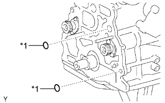 |
Установите 2 новых кольцевых уплотнения на блок цилиндров.
| *1 | Новое кольцевое уплотнение |
| 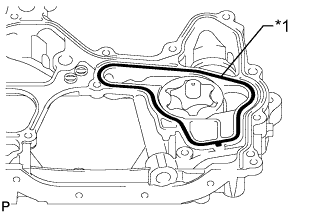 |
Установите новую прокладку в канавку картера газораспределительного механизма.
| *1 | Новая прокладка |
Удалите все остатки старого герметика (FIPG).
| 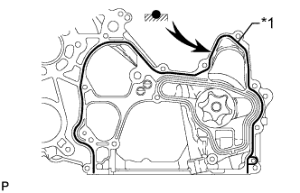 |
Нанесите герметик на картер газораспределительного механизма, как показано на рисунке.
| *1 | Герметик |
| 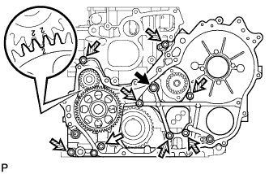 |
Совместите метки "2" ведомой шестерни уравновешивающего вала № 1 и ведущей шестерни масляного насоса.
 | Пустотелый соединительный болт-штуцер |
 | Болт A |
 | Болт B |
Закрепите картер газораспределительного механизма с помощью пустотелого соединительного болта-штуцера и 8 болтов.
| 2. УСТАНОВИТЕ ПОДДОН КАРТЕРА В СБОРЕ |
Удалите все остатки старого герметика (FIPG). Следите, чтобы масло не попало на сопряженные поверхности блока цилиндров, стопора заднего сальника коленчатого вала и масляного поддона.
Установите новую прокладку на блок цилиндров.
 |
Нанесите герметик в виде сплошного валика, как показано на рисунке.
| *1 | Герметик |
Установите поддон картера и закрепите его 22 болтами и 2 гайками.
| 3. УСТАНОВИТЕ МАСЛОПРИЕМНИК С СЕТЧАТЫМ ФИЛЬТРОМ В СБОРЕ |
Установите новую прокладку и закрепите сетчатый фильтр 2 гайками.
| 4. УСТАНОВИТЕ ПОДДОН КАРТЕРА № 2 В СБОРЕ |
Удалите все остатки старого герметика (FIPG).
 |
Нанесите герметик на масляный поддон № 2, как показано на рисунке.
| *1 | Герметик |
Установите масляной поддон № 2 и закрепите его 13 болтами и 2 гайками.
| 5. УСТАНОВИТЕ ШЕСТЕРНЮ НАСОСА ВЫСОКОГО ДАВЛЕНИЯ |
Закрепите новое кольцевое уплотнение и нагнетающий топливный насос 2 гайками.
Временно закрепите шестерню насоса высокого давления гайкой.
| 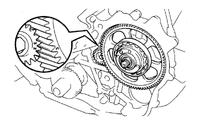 |
Совместите метки "3" ведомой шестерни уравновешивающего вала № 2 и шестерни насоса высокого давления.
| 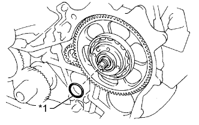 |
Установите новое кольцевое уплотнение на шестерню насоса высокого давления.
| *1 | Новое кольцевое уплотнение |
| 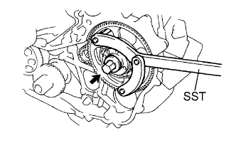 |
Заверните установочную гайку шестерни насоса высокого давления.
Затяните установочную гайку с помощью SST.
| 6. УСТАНОВИТЕ ВЕДУЩЕЕ ЗУБЧАТОЕ КОЛЕСО КОЛЕНЧАТОГО ВАЛА |
 |
Установите ведущее зубчатое колесо коленчатого вала таким образом, чтобы установочная метка 1 была направлена вперед.
Совместите шпоночную канавку ведущего зубчатого колеса коленчатого вала с установочной шпонкой на коленчатом валу.
С помощью SST и молотка вбейте ведущее зубчатое колесо, чтобы установить его.
| 7. УСТАНОВИТЕ ВАЛ ПРОМЕЖУТОЧНОЙ ШЕСТЕРНИ № 1 |
| 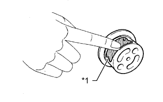 |
Нанесите слой моторного масла на вал промежуточной шестерни № 1.
| *1 | Моторное масло |
| 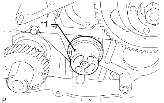 |
Установите вал шестерни, как показано на рисунке.
| *1 | Смазочное отверстие |
| 8. УСТАНОВИТЕ ПРОМЕЖУТОЧНУЮ ШЕСТЕРНЮ № 1 |
 |
Совместите установочные метки "4" и "5" промежуточной шестерни и ведущего зубчатого колеса коленчатого вала.
| *a | Поверните |
С помощью SST поверните шестерню насоса высокого давления и совместите установочные метки "4" промежуточной шестерни и шестерни насоса высокого давления, а затем введите шестерни в зацепление.
 |
Установите упорный диск промежуточной шестерни выступом вперед.
| *1 | Технологический болт |
Совместите болтовые отверстия и закрепите упорный диск промежуточной шестерни 2 болтами.
Выверните технологический болт.
| 9. УСТАНОВИТЕ ЗУБЧАТЫЙ ДИСК ДАТЧИКА ПОЛОЖЕНИЯ КОЛЕНЧАТОГО ВАЛА № 1 |
Совместите шпоночную канавку зубчатого диска датчика положения коленчатого вала № 1 с установочной шпонкой.
Установите зубчатый диск датчика положения коленчатого вала № 1 так, чтобы чашеобразная сторона была обращена наружу.
| 10. УСТАНОВИТЕ КРЫШКУ ГАЗОРАСПРЕДЕЛИТЕЛЬНОГО МЕХАНИЗМА |
Удалите все остатки старого герметика (FIPG).
| 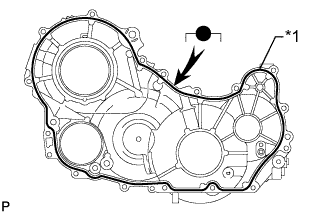 |
Нанесите герметик на крышку газораспределительного механизма, как показано на рисунке.
| *1 | Герметик |
 |
Установите в картер газораспределительного механизма 3 новых кольцевых уплотнения.
| *1 | Новое кольцевое уплотнение |
Закрепите крышку газораспределительного механизма 14 болтами 2 гайками.
| 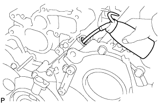 |
Снимите резьбовую заглушку и прокладку.
Залейте в масляный насос приблизительно 50 куб. см (3,05 куб. дюйма) моторного масла.
Установите новую прокладку и резьбовую заглушку.
| 11. УСТАНОВИТЕ НАСОС СИСТЕМЫ ОХЛАЖДЕНИЯ В СБОРЕ |
Установите новую прокладку и закрепите насос системы охлаждения 5 болтами и 2 гайками.
| 12. УСТАНОВИТЕ КРЫШКУ РЕМНЯ ГАЗОРАСПРЕДЕЛЕНИЯ № 2 |
| 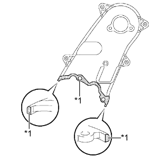 |
Нанесите герметик (FIPG) на заданные участки, показанные на рисунке.
| *1 | Герметик |
Установите крышку ремня газораспределения № 2 и закрепите ее 4 болтами и гайкой.
| 13. УСТАНОВИТЕ ЗУБЧАТОЕ КОЛЕСО РАСПРЕДВАЛА |
Установите зубчатое колесо распредвала.
Вверните болт зубчатого колеса распредвала, удерживая распредвал ключом.
| 14. УСТАНОВИТЕ КРЫШКУ МАСЛЯНОГО ПОДДОНА № 1 В СБОРЕ |
Закрепите крышку масляного поддона № 1 4 болтами.
| 15. УСТАНОВИТЕ ВАКУУМНУЮ ТРУБКУ № 1 В СБОРЕ |
Закрепите вакуумную трубку № 1 болтом и гайкой.
| 16. УСТАНОВИТЕ ШКИВ КОЛЕНЧАТОГО ВАЛА |
Совместите шпоночную канавку шкива со шпонкой коленчатого вала, а затем задвиньте шкив на место.
 |
С помощью SST затяните болт шкива.
| 17. УСТАНОВИТЕ КЛАПАН-ПЕРЕКЛЮЧАТЕЛЬ ДАВЛЕНИЯ МАСЛА В СБОРЕ |
Нанесите тонкий слой моторного масла на кольцевое уплотнение клапана-переключателя давления масла.
Закрепите клапан-переключатель давления масла болтом.
| 18. УСТАНОВИТЕ ДАТЧИК ПОЛОЖЕНИЯ КОЛЕНЧАТОГО ВАЛА |
| 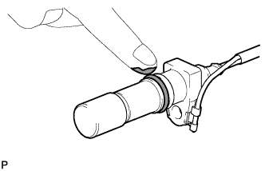 |
Нанесите тонкий слой моторного масла на уплотнительное кольцо датчика положения коленчатого вала.
 |
Закрепите датчик положения коленчатого вала болтом и присоедините 3 зажима жгута проводов.
| *1 | Выступы |
| *2 | Новый зажим |
Установите новый зажим.
Подсоедините разъем датчика положения коленчатого вала.
| 19. УСТАНОВИТЕ ДАТЧИК ПОЛОЖЕНИЯ РАСПРЕДВАЛА |
Установите датчик положения распредвала и закрепите его болтом.
| 20. УСТАНОВИТЕ ЛОПАСТНОЙ НАСОС В СБОРЕ |
Закрепите новое кольцевое уплотнение и лопастной насос 2 гайками.
| 21. УСТАНОВИТЕ ВАКУУМНЫЙ НАСОС В СБОРЕ |
Установите 2 новых кольцевых уплотнения на вакуумный насос.
Закрепите вакуумный насос 2 гайками.
| 22. УСТАНОВИТЕ КРОНШТЕЙН КОМПРЕССОРА № 1 |
Закрепите кронштейн крепления компрессора № 1 5 болтами.
| 23. УСТАНОВИТЕ ОПОРНЫЙ РОЛИК № 2 В СБОРЕ (для моделей с системой кондиционирования) |
Установите распорную втулку, опорный ролик № 2 и крышку ролика и закрепите их болтом.
| 24. УСТАНОВИТЕ КРОНШТЕЙН ГЕНЕРАТОРА |
Закрепите кронштейн генератора болтом.
| 25. УСТАНОВИТЕ ГЕНЕРАТОР В СБОРЕ |
 |
Установите генератор и закрепите его 2 болтами.
| 26. УСТАНОВИТЕ ФОРСУНКУ В СБОРЕ |
| 27. УСТАНОВИТЕ НАГНЕТАЮЩИЙ ТОПЛИВНЫЙ НАСОС В СБОРЕ |
| 28. УСТАНОВИТЕ ЭЛЕКТРИЧЕСКИЙ КЛАПАН УПРАВЛЕНИЯ РОГ В СБОРЕ |
| 29. УСТАНОВИТЕ ПРИВОДНОЙ РЕМЕНЬ ГАЗОРАСПРЕДЕЛЕНИЯ |
| 30. СНИМИТЕ ДВИГАТЕЛЬ СО СТЕНДА |
 |
Установите 2 крюка для вывешивания двигателя, закрепив их 2 болтами, как показано на рисунке.
| *1 | Крюк для вывешивания двигателя № 1 |
| *2 | Крюк для вывешивания двигателя № 2 |
| Крюк для вывешивания двигателя № 1 | 12284-30020 |
| Крюк для вывешивания двигателя № 2 | 12282-67030 |
| Болт | 91552-81014 и 91642-81030 |
С помощью устройства для подъема двигателя и цепного блока подвесьте двигатель.
Снимите двигатель со стенда.
| 31. УСТАНОВИТЕ ДВИГАТЕЛЬ В СБОРЕ |
| 32. ЗАЛЕЙТЕ МОТОРНОЕ МАСЛО |
Залейте новое моторное масло.
| Параметр / Устройство | Класс масла | Вязкость масла (SAE) |
| Для моделей с DPF | ACEA C2 (использование моторного масла, отличного от ACEA C2, может привести к повреждению каталитического нейтрализатора) | - 0W-30 - 5W-30 (0W-30 – наилучшее масло с точки зрения экономии топлива и облегчения запуска двигателя в холодную погоду) |
| Для моделей без DPF | G-DLD1, API CF-4, CF или ACEA B1 (также можно использовать API CE или CD) | - 5W-30 - 10W-30 - 15W-40 - 20W-50 |
| Параметр / Устройство | Заданные условия |
| Слив и заполнение без замены масляного фильтра | 6,7 л (7,1 кварты США, 5,9 английской кварты) |
| Слив и заполнение с заменой масляного фильтра | 7,0 л (7,4 кварты США, 6,2 английской кварты) |
| Заполнение сухой системы | 7,5 л (7,9 кварты США, 6,6 английской кварты) |
Установите крышку маслоналивной горловины.
| 33. ПОДСОЕДИНИТЕ ПРОВОД К ОТРИЦАТЕЛЬНОМУ ВЫВОДУ АККУМУЛЯТОРНОЙ БАТАРЕИ |
| 34. ДОБАВЬТЕ ОХЛАЖДАЮЩУЮ ЖИДКОСТЬ ДВИГАТЕЛЯ |
Затяните пробку сливного крана радиатора вручную.
Затяните пробку сливного крана блока цилиндров.
Заполните радиатор охлаждающей жидкостью с увеличенным сроком замены "Super Long Life Coolant (SLLC)" от компании Тойота, залив ее в трубопровод B расширительного бачка.
| Параметр / Устройство | Заданные условия | |
| для моделей с автоматической трансмиссией | Для моделей с задним подогревателем | 14,9 литра (15,7 кварты США, 13,1 английской кварты) |
| Для моделей без заднего подогревателя | 13,1 литра (13,8 кварты США, 11,5 английской кварты) | |
| для моделей с механической трансмиссией | Для моделей с задним подогревателем | 15,0 литра (15,8 кварты США, 13,2 английской кварты) |
| Для моделей без заднего подогревателя | 13,2 литра (13,9 кварты США, 11,6 английской кварты) | |
Несколько раз сожмите рукой входной и выходной патрубки радиатора, затем проверьте уровень охлаждающей жидкости.
Если уровень охлаждающей жидкости опускается ниже линии В, долейте охлаждающую жидкость SLLC Toyota до линии В.
Установите пробку расширительного бачка радиатора.
Установите вентиляционную пробку с помощью гаечного ключа.
Выпустите воздух из системы охлаждения.
Прогревайте двигатель, пока не откроется термостат. Когда термостат откроется, несколько минут прокачивайте охлаждающую жидкость.
Поддерживайте частоту вращения коленчатого вала двигателя на уровне 2500–3000 об/мин.
Несколько раз сожмите рукой входной и выходной патрубки радиатора, чтобы удалить воздух.
Остановите двигатель и подождите, пока охлаждающая жидкость остынет до температуры окружающего воздуха.
Когда охлаждающая жидкость остынет, убедитесь, что она находится на уровне отметки FULL.
Если уровень охлаждающей жидкости ниже отметки FULL, долейте SLLC от компании Тойота до этой отметки.
| 35. УДАЛИТЕ ВОЗДУХ ИЗ ТОПЛИВНОЙ СИСТЕМЫ |
 |
С помощью ручного насоса, установленного на крышке топливного фильтра, удалите воздух из топливной системы. Продолжайте прокачку, пока сопротивление насоса при работе не возрастет.
Проверьте, запускается ли двигатель.
Если двигатель запускается, перейдите к следующему шагу.
Если запуск двигателя невозможен, прокачайте систему снова с помощью ручного насоса до повышения сопротивления насоса (см. процедуры выше). Затем запустите двигатель.
Выключите зажигание.
Подсоедините портативный диагностический прибор к DLC3.
Включите зажигание (IG) и портативный диагностический прибор.
Сбросьте коды DTC (Нажмите здесь).
Запустите двигатель.*1
 |
Войдите в следующие меню: Powertrain / Engine and ECT / Active Test / Test the Fuel Leak.*2
| *a | Для справки (испытание в режиме Active Test) |
Выполните следующее испытание 5 раз с интервалами включения/выключения 10 с: Active Test / Test the Fuel Leak.*3
После 5-го испытания в режиме Active Test дайте двигателю поработать на холостом ходу в течение не менее 3 мин.

Войдите в следующие меню: Powertrain / Engine and ECT / DTC.
Считайте текущие коды DTC.
Сбросьте коды DTC (Нажмите здесь).
Повторите операции с *1 по *3.
Войдите в следующие меню: Powertrain / Engine and ECT / DTC.
Считайте текущие коды DTC.
| 36. ПРОВЕРЬТЕ, НЕТ ЛИ УТЕЧЕК ОХЛАЖДАЮЩЕЙ ЖИДКОСТИ |
Заполните радиатор охлаждающей жидкостью и подсоедините приспособление для опрессовки системы охлаждения и проверки пробки радиатора.
Прогрейте двигатель.
С помощью приспособления для опрессовки системы охлаждения и проверки пробки радиатора увеличьте давление в радиаторе до 123 кПа (1,3 кгс/см2, 18 фунтов на кв. дюйм) и убедитесь, что давление не падает.
Если давление снижается, проверьте на наличие утечек шланги, радиатор и насос системы охлаждения. При отсутствии внешних утечек проверьте сердцевину нагревателя, блок цилиндров и головку.
| 37. ПРОВЕРЬТЕ, НЕТ ЛИ УТЕЧЕК МАСЛА |
Запустите двигатель. Убедитесь, что в узлах, в которых выполнялись работы, нет утечек масла.
| 38. ПРОВЕРЬТЕ, НЕТ ЛИ УТЕЧЕК ТОПЛИВА |
Выполните диагностику в режиме Active Test.
Подсоедините портативный диагностический прибор к DLC3.
Включите зажигание (IG).
Включите портативный диагностический прибор.
Войдите в следующие меню: Powertrain / Engine and ECT / Active Test.
Выполните диагностику в режиме Active Test.
| Дисплей портативного диагностического прибора | Испытываемое устройство | Диапазон регулирования | Замечание по диагностике |
| Test the Fuel Leak | Создание давления в топливной системе Common Rail для проверки наличия утечек топлива | Stop/Start (остановить/запустить) |
|
| 39. ПРОВЕРЬТЕ, НЕТ ЛИ УТЕЧЕК ОТРАБОТАВШИХ ГАЗОВ |
| 40. ПРОВЕРЬТЕ ЧАСТОТУ ВРАЩЕНИЯ КОЛЕНЧАТОГО ВАЛА ДВИГАТЕЛЯ НА ХОЛОСТОМ ХОДУ |
Подсоедините портативный диагностический прибор к DLC3.
 |
Если портативный диагностический прибор отсутствует, подсоедините щуп тахометра к контакту 9 (TAC) DLC3 с помощью SST.
| *a | Вид спереди разъема DLC3 |
Проверьте частоту вращения коленчатого вала двигателя на холостом ходу.
Запустите двигатель и проверьте частоту вращения холостого хода.
| Параметр / Устройство | Заданные условия | |
| для моделей с автоматической трансмиссией | 650–750 об/мин | |
| для моделей с механической трансмиссией | Для моделей с DPF | 650–750 об/мин |
| Для моделей без DPF | 610-710 об/мин | |
Проверьте максимальную частоту.
Запустите двигатель.
До упора нажмите педаль акселератора.
Измерьте максимальную частоту.
| Параметр / Устройство | Заданные условия |
| Для моделей с DPF | 4500 - 4700 об/мин |
| Для моделей без DPF | 4450 - 4750 об/мин |
Если щуп тахометра подключен к DLC3, отсоедините его вместе с SST от контакта 9 разъема DLC3.
Отсоедините портативный диагностический прибор от DLC3.
| 41. ПРОВЕРЬТЕ УРОВЕНЬ МОТОРНОГО МАСЛА |
Прогрейте двигатель, затем остановите его и подождите 5 минут. Уровень моторного масла должен находиться между отметками низкого и максимального уровней на щупе проверки уровня масла.
Если уровень низкий, проверьте, нет ли утечек, и долейте масло до максимальной отметки.
| 42. УСТАНОВИТЕ ЗАЩИТУ КАРТЕРА ДВИГАТЕЛЯ № 1 В СБОРЕ |
Установите защиту картера двигателя № 1 и закрепите ее 4 болтами.
| 43. УСТАНОВИТЕ НИЖНЮЮ ОБЛИЦОВКУ ПЕРЕДНЕГО БАМПЕРА |
Установите нижнюю накладку переднего бампера и закрепите ее фиксатором и 5 болтами.